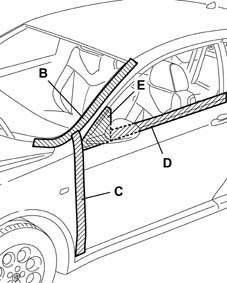

7005A LOCATION OF FRONT DOOR WIND NOISES
- Path
- Test > 70 FITTINGS > 7005 PASSENGER COMPARTMENT FRONT SIDE DOORS > 7005A LOCATION OF FRONT DOOR WIND NOISES
- Kind
- test / check procedure
- Applies to
- all engines; all production periods
- Interactive page
- https://sloeber94.github.io/elrnDB-aGt/en/#/125000812
Applies to: all engines; all production periods
Tape the various areas shown in the figure with masking tape.

Conduct a road test, gradually bringing the vehicle up to the speed where the noise starts, checking whether the noise has disappeared.
Remove the masking tape from area A and repeat the road test: if the rustling noise appears, the noise is coming from the area betwen the pillar and the windscreen.
Remove the masking tape from area B and repeat the road test: if the rustling appears, the noise is coming from the area between the door and the windscreen.
Remove the masking tape from area C and repeat the road test: if the rustling appears, the noise is coming from the area between the door and the wing. Remove or add shims on the two hinges, to make the door adhere better to the seal.
Remove the masking tape from area D and repeat the road test: if the rustling appears, the noise is coming from the area between the window and the door.
Remove the masking tape from area E and repeat the road test: if the rustling appears, the noise is coming from the mirror.